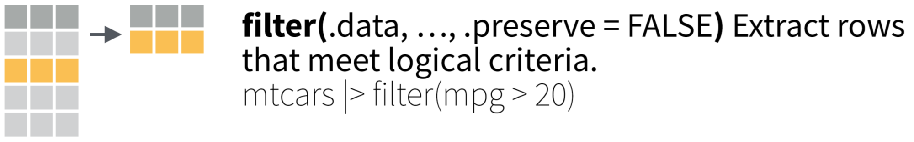
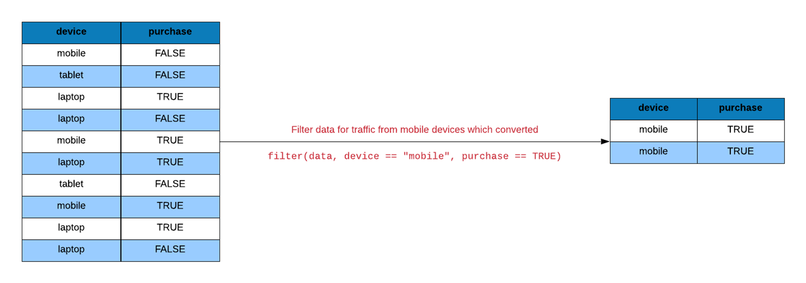
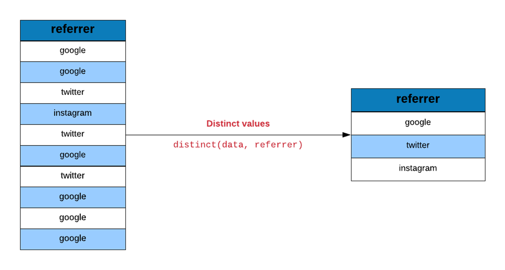
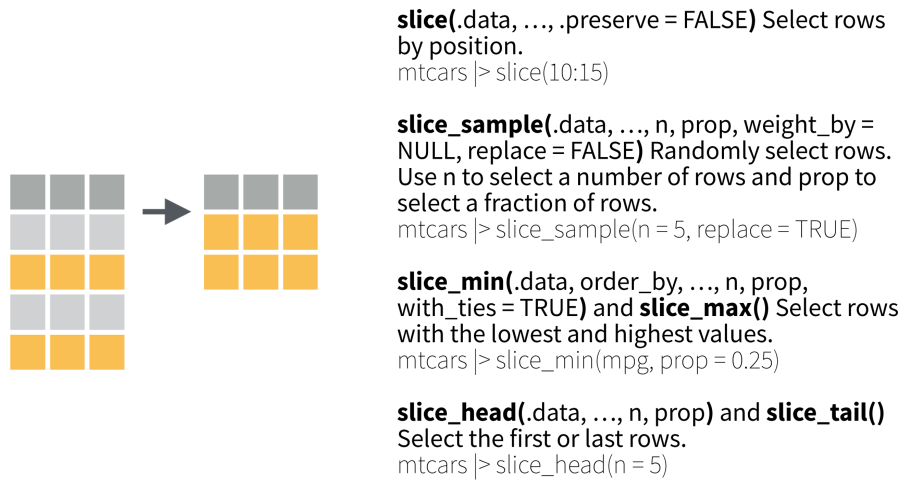
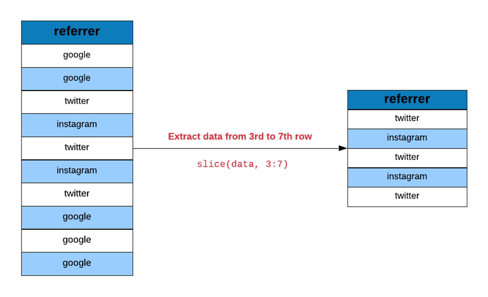
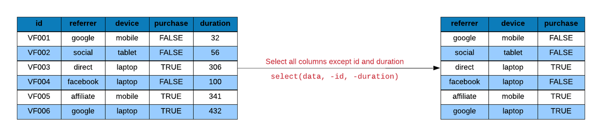
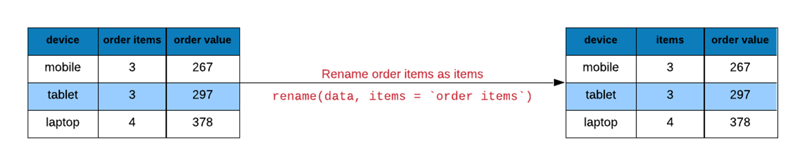
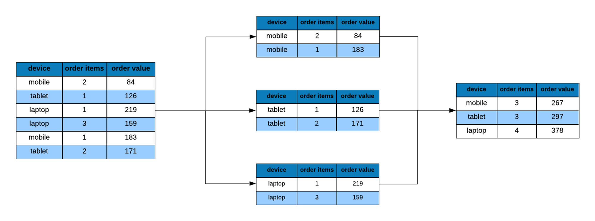
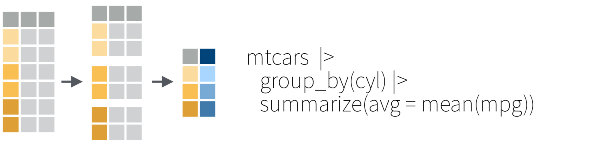
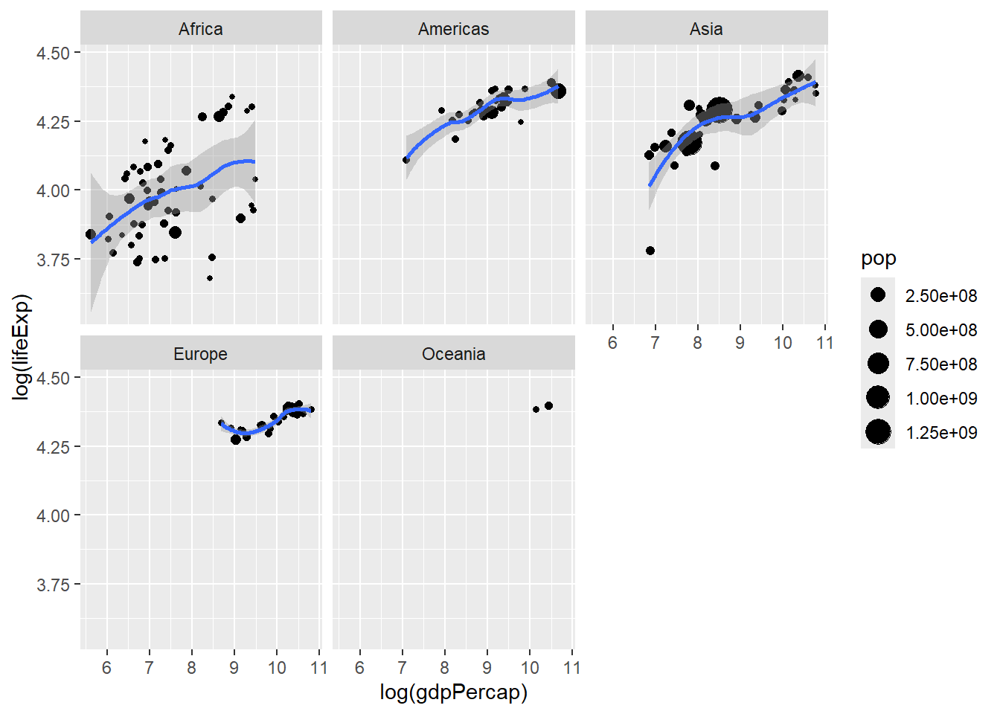

# A tibble: 1,704 × 6
country continent year lifeExp pop gdpPercap
<fct> <fct> <int> <dbl> <int> <dbl>
1 Afghanistan Asia 1952 28.8 8425333 779.
2 Afghanistan Asia 1957 30.3 9240934 821.
3 Afghanistan Asia 1962 32.0 10267083 853.
4 Afghanistan Asia 1967 34.0 11537966 836.
5 Afghanistan Asia 1972 36.1 13079460 740.
6 Afghanistan Asia 1977 38.4 14880372 786.
7 Afghanistan Asia 1982 39.9 12881816 978.
8 Afghanistan Asia 1987 40.8 13867957 852.
9 Afghanistan Asia 1992 41.7 16317921 649.
10 Afghanistan Asia 1997 41.8 22227415 635.
# ℹ 1,694 more rows
Day 3
탐색적 데이터 분석
탐색적 데이터 분석
데이터사이언스 과정의 심장
탐색적 데이터 분석: 개념
탐색적 데이터 분석은 데이터와의 끝임없는 상호작용을 통해 의미있는 결과물을 얻어내는 과정을 의미한다. 데이터사이언스가 데이터로부터 이해, 지식, 통찰력을 획득하는 과정이라고 했을 때, 탐색적 데이터 분석은 데이터사이언스의 심장이라 해도 과언이 아니다. 상호작용은 데이터와의 질의응답의 연쇄과정을 의미한다. 의미있는 질문에 답을 얻기 위해서는 거의 반드시 데이터를 변형하거나 시각화해야만 한다.
데이터 변형과 데이터 시각화는 개별적으로 탐색적 데이터 분석에 기여한다. 데이터 변형은 데이터를 다른 각도로 바라볼 수 있게 해주고 다양한 요약 통계값을 산출해 준다. 데이터 시각화는 데이터에 차원을 부가함으로써 시각화 되지 않았다면 발견할 수 없었던 것을 발견할 수 있게 해준다.
탐색적 데이터 분석: 개념
데이터 변형에서 데이터 시각화로 이어지는 시퀀스가 탐색적 데이터 분석의 핵심적인 방법론이다. 데이터 변형의 궁극적인 목적은 바로 데이터 시각화를 위한 준비이다. 특정한 형태의 시각화를 위해서는 특정한 형태의 데이터가 필수적이고, 그것이 이해, 지식, 통찰력의 획득으로 나아가게 해주는 주된 경로이다.
데이터 시각화의 두 가지 목적은 탐색과 커뮤니케이션이다. 우리가 데이터 시각화를 하는 첫번째 목적은 데이터에 대한 질문에 답을 찾기 위해서이다. 우리가 데이터를 시각화하는 두 번째 목적은 우리가 발견한 것을 다른 사람들과 ‘잘’ 커뮤니케이션하기 위해서이다.
탐색적 데이터 분석: 절차
질문에 답할 수 있는 그래픽(플롯, 지도 등)을 구상한다.
구상한 그래픽에 부합하도록 데이터를 변형한다.
변형한 데이터를 구상한 그래픽으로 시각화한다.
그래픽으로부터 질문의 답을 구하고, 더 나아가 지식, 이해, 통찰을 이끌어 낸다.
탐색적 데이터 분석: 예시
대륙별 최대국(인구가 가장 많은 나라)이 소속 대륙 전체에서 차지하는 비중이 어느 정도이고 대륙별로 어느 정도의 차이가 있는지, 그리고 대륙별 최대국의 비중이 시간이 지남에 따라 어떠한 변화 양상을 보여주고 있고, 그러한 양상에 대륙별 차이가 있는지의 여부
gapminder |>
group_by(year, continent) |>
mutate(
sum_cont = sum(pop),
country_prop = pop * 100 / sum_cont
) |>
slice_max(country_prop) |>
ggplot() +
geom_line(aes(x = year, y = country_prop, color = continent), linewidth = 1) +
labs(x = "Year", y = "% of Population", color = "Continents") 데이터 변형하기
dplyr 패키지

dplyr 기초
첫 번째 아규먼트는 항상 데이터 프레임이다.
그 다음 아규먼트(들)는 데이터 변형에 결부되는 변수(들)를 지정한다 .
산출물은 항상 데이터 프레임이다.
dplyr 함수의 유형
행(rows) 함수: 행에 적용되는 함수, 즉 행의 변화를 야기하는 함수
열(columns) 함수: 열에 적용되는 함수, 즉 열의 변화를 야기하는 함수
그룹(groups) 함수: 그룹에 적용되는 함수
테이블(tables) 함수: 테이블 전체에 적용되는 함수
행 함수: 네 개의 주요 함수
행 함수 1: filter()

행 함수 1: filter()

행 함수 1: filter()

행 함수 2: arrange()

행 함수 2: arrange()
행 함수 3: distinct()

행 함수 3: distinct()

행 함수 4: slice()

행 함수 4: slice()

열 함수: 네 개의 주요 함수
select(): 변수(들) 중 일부를 추출mutate(): 변수(들)를 변형해 새로운 변수를 생성rename(): 변수(들)의 이름을 변경relocate(): 변수(들)의 위치(순서)를 변경
열 함수 1: select()

열 함수 1: select()

열 함수 2: mutate()


열 함수 3: rename()


열 함수 3: rename()

열 함수 4: relocate()

그룹 함수: 네 개의 주요 함수
group_by(): 변수(들)에 의거해 전체 행(들)을 그룹으로 분할summarize(): 그룹별로 변수(들)의 통계량을 산출하여 새로운 변수(들)로 저장count(): 그룹별로 해당 관측개체의 빈도수를 계산across(): 그룹별로 여러 변수에 걸쳐 동일한 통계량을 산출하고 새로운 변수들로 저장
그룹 함수 1: group_by()
그룹 함수 1: group_by()

그룹 함수 2: summarize()

그룹 함수 1 + 2: group_by() + summarize()

그룹 함수 1 + 2: group_by() + summarize()
그룹 함수 3: count()

그룹 함수 3: count()
그룹 함수 4: across()
파이프 연산자와 dplyr 함수

파이프 연산자와 dplyr 함수
데이터 시각화하기
ggplot2 패키지

Grammar of graphics

ggplot2의 8대 구성 요소

심미성과 기하
-
심미성(aesthetics) 혹은 심미성 매핑(aesthetic mapping)
그래프의 외견을 규정
시각 변수 혹은 속성: color, size, shape 등
-
기하(geometries) 혹은 기하 객체(geometric objects)
그래프의 전체 구조 혹은 형식을 규정
그래프의 유형: bar chart, line chart 등
심미성과 기하
gapminder |>
filter(year == 2007) |>
ggplot(aes(x = gdpPercap, y = lifeExp)) +
geom_point(aes(color = continent)) +
geom_smooth(color = "black")
심미성과 기하
x-axis, y-axis
color, fill
shape
size
alpha
position
geom_point()geom_line()geom_bar(), geom_col()geom_histogram(), geom_density()geom_smooth()geom_boxplot(), geom_violin()geom_text(), geom_label()
스케일 scale
심미성의 구체적 구현
-
x-axis, y-axis
-
scale_x_continuous(),scale_x_discrete()
-
-
color와 fill
-
scale_color_brewer(),scale_fill_brewer() -
scale_color_manual(),scale_fill_manual()
-
-
others
scale_shape(),scale_size()scale_linetype(),scale_linewidth()
패싯 facet
다면생성(faceting) 과정을 통해, 하나의 플롯을 여러 개의 하위 플롯으로 분할
-
두 가지 중요 함수
facet_wrap()facet_grid()
패싯 facet


통계적 변환 Statistical transformation

좌표 Coordinates
그래픽 요소들의 위치 결정에 기준이 되는 준거 체계
-
두 가지 중요 함수
coord_flip()coord_fixed()
테마 Theme
-
그래프의 전체적인 외양(테마)를 수정
- 8개 테마 제공
-
그래프의 세부 구성 요소를 수정
theme()
테마 Theme

테마 Theme
-
수 많은 옵션 https://ggplot2.tidyverse.org/reference/theme.html
axis 관련
legend 관련
plot.title 관련